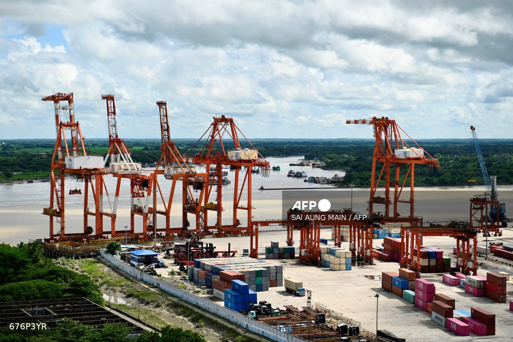

The Mine That Moves the Market
When a single mine in eastern Myanmar suspended operations in 2023, tin prices spiked and smelters in China scrambled for supply. The shock rippled through global supply chains, raising costs for electronics and semiconductor manufacturers thousands of kilometres away. The mine has yet to resume major production, leaving global tin supplies exposed just as demand surges with the AI data centre boom.
The Man Maw mine is located in an enclave near the Chinese border controlled by the United Wa State Army (UWSA), a powerful non-state militia of more than 20,000 fighters with high-tech weaponry that has maintained a ceasefire with the Myanmar military since 1989. The group has been under U.S. sanctions since 2003 for narcotics trafficking, and eight senior leaders were later indicted by a grand jury on heroin and methamphetamine charges.

At its peak in the late 2010s and early 2020s, Myanmar became the world’s third-largest tin producer, the vast majority from Man Maw. In some years, the mine supplied 30-40 per cent of China’s tin concentrate imports, making it a critical upstream source for global solder, electronics and semiconductor supply chains.
Production at the mine expanded rapidly through the 2010s. Satellite imagery shows roads, ore pads, tailings dumps and worker housing spreading across previously forested hillsides.
The UWSA governs this territory as a de facto mini-state, largely insulated from direct fighting even after the 2021 coup. That stability translated into predictable tin output, and growing global dependence.
Then, in April 2023, Wa authorities announced a suspension of mining at Man Maw, ostensibly for a resource audit. Production effectively halted in August that year.
Benchmark tin prices on the London Metal Exchange immediately jumped by 12 per cent, a significant price shock for an industrial metal. Smelters warned of tightening concentrate supply. Analysts described the global market as “beholden” to the fortunes of a single Myanmar mine.
Tin concentrate exports from Myanmar to China were worth over US$1 billion annually at their peak. For a single armed group, control over such enormous flows gives it not only substantial revenue, but also political leverage in both Myanmar and China.
The suspension also revealed an unforeseen vulnerability. This was not the armed conflict that surged in Myanmar following the February 2021 coup, nor the broader political crisis. Rather, Crisis Group interviews suggest it was internal Wa dynastic politics.
Man Maw is operated by seven companies controlled by senior Wa leaders. The closure coincided with a leadership transition within the UWSA, as a generational shift brought new individuals to the fore - including the sons of ageing leaders - and reopened informal power and revenue sharing arrangements. Tensions over revenue distribution - both among leaders and within the UWSA treasury - appear to have driven the prolonged halt in mining.
The armed group solicited applications for new permits in 2024 and issued the first approvals the following year, raising industry hopes that supply would come back on stream. That does not yet appear to have happened. But satellite imagery and other remote sensing data suggest that preparations are now underway, with the construction of large new buildings. Night-light intensity around the site has also now returned to higher levels, after a significant decrease following the suspension.
The reasons for the slow re-start remain unclear. Industry and media reports point to several possibilities, including normal lead times for restarting underground mines, flooding in shafts, administrative delays, and potential depletion of higher-grade ore bodies. Whatever the cause, a central concern for market participants is the lack of reliable information about the resource.
Mines typically open and close in response to global market signals. In this case, the market is reacting to the decisions of a militia. As tin demand surges with the AI data centre build-out, a critical input for advanced computing depends on opaque politics in a militia-run enclave beyond state control.
